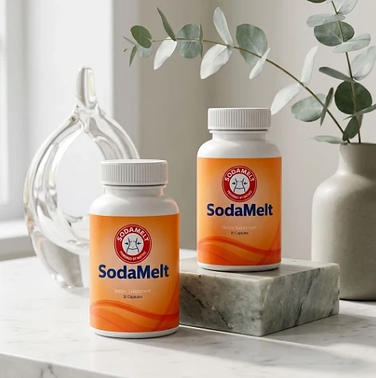
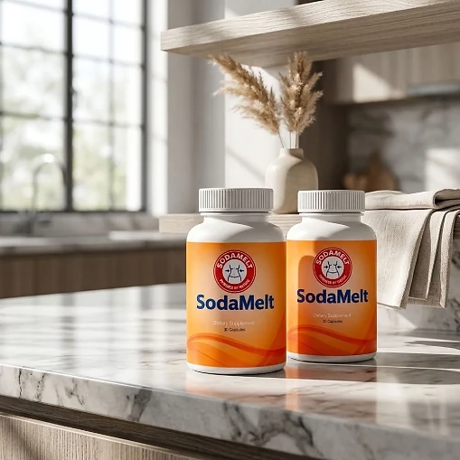
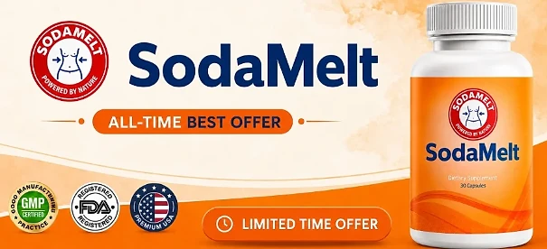

What Is SodaMelt And How Does It Work?
SodaMelt is a dietary supplement in capsule form designed to support healthy digestion, everyday metabolic wellness, and a lighter feeling for adults who want to address the everyday bloating, heaviness after meals, and sluggish digestion that can get in the way of feeling comfortable through a natural, dependable approach — without complicated routines or temporary quick fixes.
It utilizes a simple daily capsule that combines Calcium with a proprietary blend of fibers, botanicals, and a probiotic — including Psyllium Husk, Cascara Sagrada, Aloe Vera, Alfalfa, and Lactobacillus acidophilus — to support regularity, digestive comfort, and gut balance, helping the body maintain its natural balance throughout the day.
The ingredients in SodaMelt are fiber-rich and botanical components that, according to the official website, are chosen to promote healthy digestion and help the body feel lighter and more balanced, particularly for adults who prefer one simple capsule a day over multiple products or complicated plans.
Rather than acting as a short-lived artificial fix, SodaMelt focuses on a digestion-first approach, working gradually alongside daily routines to help maintain comfort after meals, regularity, and long-term wellness.
With consistent daily use, the formula is intended to encourage less everyday bloating, steadier comfort around food, and a gradual sense of lightness, especially when combined with a balanced diet, plenty of water, and regular exercise.
From a practical standpoint, SodaMelt is a daily digestive and metabolic wellness capsule designed to support wellness from within — helping you stay active, comfortable, and in control of your health.
Manufactured in the USA with globally sourced ingredients, according to the product label, and produced in an FDA-registered, GMP-certified facility, according to the official website, SodaMelt is designed for regular daily use, focusing on safety, purity, and quality for those seeking a natural, non-prescription route to digestive comfort.
SodaMelt Ingredients
Every capsule of SodaMelt contains twelve active ingredients listed on the Supplement Facts panel: 100 mg of Calcium and a 250 mg proprietary blend of eleven fibers, botanicals, and a probiotic. The official website highlights four of them, chosen to support digestion, regularity, and gut balance as part of a consistent daily routine:
Psyllium Husk: A soluble Plantago ovata fiber that forms a gel with water and helps bulk and soften stool for more comfortable elimination.
Cascara Sagrada Bark: A Rhamnus purshiana botanical with a long history of traditional use to encourage natural bowel elimination.
Aloe Vera Leaf: A botanical traditionally used for digestive comfort, often paired with fiber.
Alfalfa Herb: A Medicago sativa herb traditionally used as a source of fiber and micronutrients.
Calcium (100 mg, as Calcium Carbonate): A mineral that provides 7.5% of the Daily Value in each capsule.
Together, these ingredients work synergistically to support regularity, comfort after meals, and a lighter feeling from within. The same blend also lists Oat straw, Chinese Rhubarb root, Scabrous Gentian root, Goldenseal root, Buckthorn bark, Bentonite, and Lactobacillus acidophilus; because it is a proprietary blend, the label shows the total amount but not the amount of each one. The other ingredients are rice flour, hypromellose (vegetable capsule), vegetable magnesium stearate, and silicon dioxide, and the official website describes the formula as non-GMO and gluten-free.
SodaMelt is designed for daily use, offering a natural, non-prescription approach to supporting digestion, without complicated routines or aggressive synthetic compounds.
SodaMelt Side Effects
SodaMelt is generally considered well tolerated and is designed for adults of different ages and lifestyles who are looking for a safe, natural, and balanced approach to digestive wellness, especially those who prefer an easy one-capsule daily routine to support digestion, comfort, and well-being without resorting to risky solutions with severe side effects.
All ingredients used in SodaMelt are described on the official website as non-GMO, gluten-free, and non-habit-forming, and SodaMelt is manufactured in the USA in an FDA-registered, GMP-certified facility, according to the same source, reinforcing consistency, safety, and reliability.
With no widespread reports of serious side effects, SodaMelt is generally considered a well-tolerated option. Even so, Cascara Sagrada, Buckthorn, and Chinese Rhubarb are botanicals with a natural laxative effect, so some people may notice looser stools or mild cramping, and products that contain them are generally meant to be used with attention to how the body responds. Take the capsule with a full glass of water, keep it a couple of hours apart from oral medications, since fiber and bentonite can affect absorption, and stop and see a doctor if you have abdominal pain, diarrhea, or constipation that does not go away. It is not intended to diagnose, treat, cure, or prevent any disease, and individual results may vary.
According to the label, pregnant or nursing mothers, children under the age of 18, and individuals with a known medical condition should consult a physician before using SodaMelt. The same applies to anyone taking prescription medications, ensuring it fits safely within their personal wellness plan.
SodaMelt Dosage
The recommended SodaMelt dosage is one capsule a day with an 8 oz. glass of water, and it is designed to fit easily into a daily routine, making consistency simple and convenient. Formulated as an easy daily vegetable capsule, it requires no powders to mix, no drinks to prepare, and nothing to measure.
The recommended approach, as printed on the label, is to take one (1) SodaMelt capsule daily. For best results, the label suggests taking SodaMelt 20 to 30 minutes before a meal with 8 oz. of water, or as directed by your healthcare professional, which allows its ingredients to work consistently.
For best results, consistency is key. Each bottle contains 30 capsules, a one-month supply, and because fiber and botanical support for digestion builds gradually, the official website presents it as part of an ongoing wellness routine.
There is no need for complex schedules or multi-step routines. One simple daily capsule is designed to build lasting support gradually alongside a balanced diet, good hydration, and an active lifestyle. The label also advises storing the bottle in a cool, dry place away from heat and light, and not using it if the safety seal is damaged or missing.
As with any dietary supplement, it's important not to exceed the recommended dose and to check the label on your bottle. SodaMelt works best when used regularly, combined with proper hydration, balanced nutrition, and healthy daily habits.
SodaMelt – Refund Policy
You can order SodaMelt with confidence, knowing that every purchase is protected by a 60-day money-back guarantee. This allows you to try the formula and decide if it delivers the support you expect.
According to the refund policy on the official website, if you are not completely satisfied for any reason, you may request a full refund within 60 days of your original order date. Shipping charges, where applicable, are not refunded, and the customer pays the return shipping unless the product arrived damaged or incorrect.
How the refund process works: If you decide SodaMelt is not right for you, email customer support within 60 days with your order number and the email used at checkout. The team replies with the return instructions and the return address, and you then send back any remaining or unopened bottles as instructed.
Customer Support Contact Information: support@healthyconsumer.us or +1 (855) 370-7827, as printed on the product label. According to the official website, the support team is available Monday through Friday, 9 AM to 5 PM EST.
Refund Processing Time: Once your request is approved, the refund is issued to the original payment method, and it may take 5 to 10 business days to appear, depending on your bank or card issuer.
This refund policy is designed to give customers a clear and transparent experience when trying SodaMelt. If an order arrives damaged or incorrect, the policy asks customers to get in touch within 30 days of delivery.
SodaMelt – Where To Buy
SodaMelt is sold through its official website, so if you decide to try it, it's important to be careful about where you purchase it. The official website is the only sales channel the manufacturer lists, and it does not point to marketplaces such as Amazon, eBay, or Walmart.
Listings on third-party platforms may look similar but cannot be verified as authentic, raising concerns about safety, quality, and ingredient freshness — a real concern for a formula that contains a probiotic. Products purchased outside the official source may not be covered by the 60-day guarantee.
For this reason, it makes sense to purchase SodaMelt only through the official website. Buying directly from the official source ensures you receive the authentic original product, manufactured in the USA, with access to customer support and the full guarantee. According to the official website, every order is a single one-time payment, with no subscriptions, auto-shipments, or hidden fees.
To avoid counterfeit batches and ensure maximum quality, always verify that you are ordering from the official SodaMelt website before completing your purchase.
To ensure you’re getting the authentic product, most users choose to visit the official website.
Is SodaMelt A Scam?
Based on what the official website and the product label disclose, SodaMelt does not appear to be a scam. It is a real capsule supplement, sold through an established retailer, and formulated to support healthy digestion, regularity, and everyday metabolic wellness as part of a consistent routine.
The ingredients used in SodaMelt — Calcium and a blend with Psyllium Husk, Cascara Sagrada, Aloe Vera, Alfalfa, Oat straw, and Lactobacillus acidophilus, among others — are well known in the wellness field, and the label publishes a Supplement Facts panel with the full ingredient list and the total amount of the blend for transparency.
In addition to its formula, SodaMelt is manufactured in the USA with globally sourced ingredients, according to the product label, and the official website states plainly that its baking soda story is the tradition that inspired the formula, not a medical claim — a level of candor that is uncommon in this category.
It is worth keeping expectations realistic: this is a fiber and botanical formula for digestion and regularity, not a fat burner, and feeling lighter is not the same as losing body fat. Results vary from person to person, and no supplement replaces a balanced diet, regular exercise, or medical care.
SodaMelt is backed by a 60-day money-back guarantee, and orders are one-time payments with no subscriptions or hidden fees. The refund steps, the return address, and the support hours are published on the official website, which underscores the manufacturer's transparency with customers.
If you're looking for a simple daily capsule to support digestion, comfort, and well-being without complicated routines, SodaMelt is worth considering — especially when purchased directly from the official website.
For those who want to verify product details or check current availability, the official SodaMelt website remains the safest option.

Check Availability On Official Website
